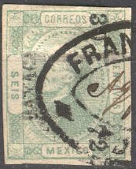
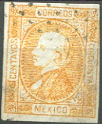
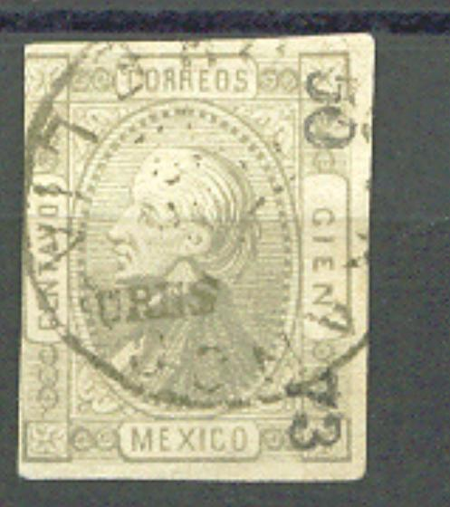

Return To Catalogue - Mexico overview
Note: on my website many of the
pictures can not be seen! They are of course present in the
catalogue;
contact me if you want to purchase it.
For issues of Mexico from before 1866, click here.



6 (seis) c green 12 (doce) c blue 25 (veinticinco) c red 50 (cinquenta) c yellow 100 (cien) c grey

50 c blue misprint. I'm not sure if this is the genuine misprint
or a reprint of this misprint.

(Moire pattern)
These stamps should have a blue so-called moire pattern on the back. Usually these stamps also have a security overprint on the frontside.
Value of the stamps |
|||
vc = very common c = common * = not so common ** = uncommon |
*** = very uncommon R = rare RR = very rare RRR = extremely rare |
||
| Value | Unused | Used | Remarks |
| 6 c | *** | *** | |
| 12 c | *** | *** | |
| 25 c | *** | ** | |
| 50 c | RRR | R | A 50 c blue 'misprint' might be an accidentally used proof. |
| 100 c | RR | RR | |
Some reprints exist without the security overprints (the 50 and 100 c above?).
I know that the forger Henry Flachskamm made reprints of these stamps. However, he did not posess the plate of the moire pattern and forged it. Thus the stamps are reprint-forgeries. These forgeries are also often referred to as St.Louis forgeries, after the town where Flachskamm was operating. Flachskamm also reprinted the 50 c blue misprint.
Forgeries, most likely the above mentioned reprints.

I've been told that this is a St.Louis forgery.
Forgery, example:
(Forgery!)
Spiro forgeries:



(Primitive forgeries)
I think the above stamps are Spiro forgeries. The outer frame line should be thinner between the labels with "CENTAVOS", "CORREOS" etc. and the outer corners. However, in this forgery this line has an equal thickness all around. Besides the values shown above, I have also seen the value 24 c of this particular forgery. The cancels are typical 'Spiro cancels'; arrays of dots, a rectangle with lines or a cancel resembling that of New South Wales. In the 6 c, the word "SEIS" is upside down?
Fournier forgeries
In the Fournier Album of Philatelic Forgeries forgeries with some of the following cancels can be found:
I have not yet been able to obtain images of these forgeries. These forgeries have security overprints as the genuine stamps. Another cancel exists used by Fournier: 'FRANCO 1 FEBR. 72 MORELIA' in a single circle, similar to the above circular cancels:



Fournier forgeries, often with "URES",
"SALTILLO" and "VERACRUZ" overprint
I have seen Fournier forgeries with '50 73' and '48 73' overprints. The 50 c had the "FRANCO ANTEPEC" cancel in two lines as shown above.
Part of a Fournier Album with these forgeries.
4 c red (1878) 5 c brown 10 c black 10 c orange (1878) 25 c blue 50 c green 100 c red
These stamps have perforation 12.
Value of the stamps |
|||
vc = very common c = common * = not so common ** = uncommon |
*** = very uncommon R = rare RR = very rare RRR = extremely rare |
||
| Value | Unused | Used | Remarks |
| 4 c | *** | *** | |
| 5 c | ** | * | |
| 10 c black | ** | ** | |
| 10 c orange | ** | * | |
| 25 c | ** | * | |
| 50 c | *** | ** | |
| 100 c | *** | *** | |


1 c brown 2 c violet 5 c orange 10 c blue 12 c brown 18 c orange 24 c violet 25 c red 50 c green 50 c yellow 85 c lilac 100 c black 100 c orange
These stamps have perforation 12.
Value of the stamps |
|||
vc = very common c = common * = not so common ** = uncommon |
*** = very uncommon R = rare RR = very rare RRR = extremely rare |
||
| Value | Unused | Used | Remarks |
| 1 c | ** | ** | |
| 2 c | ** | ** | |
| 5 c | ** | ** | |
| 10 c | ** | ** | |
| 12 c | ** | ** | |
| 18 c | ** | ** | |
| 24 c | ** | ** | |
| 25 c | * | * | |
| 50 c green | ** | ** | |
| 50 c yellow | RR | RR | |
| 100 c black | *** | *** | |
| 100 c orange | RR | RR | |
Misprints exist, printed in the wrong colour: 10 c brown and 25 c orange. Example:


2 c green 3 c red 6 c blue
These stamps have perforation 12.
Value of the stamps |
|||
vc = very common c = common * = not so common ** = uncommon |
*** = very uncommon R = rare RR = very rare RRR = extremely rare |
||
| Value | Unused | Used | Remarks |
| 3 c | *** | *** | |
| 3 c | ** | ** | |
| 6 c | *** | *** | |
For stamps issued after 1879 click here.


{kind=link}
{kind=link}
{kind=link}
{kind=link}